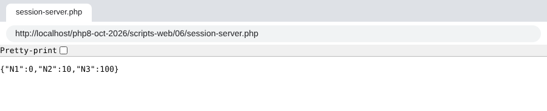
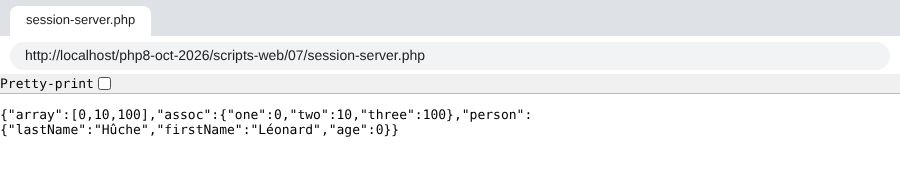

17. Web services
Nota: por “web service”, entendemos aqui qualquer aplicação web que entregue dados brutos consumidos por um cliente — nos exemplos a seguir, um script de console. Não nos interessamos por nenhuma tecnologia em particular — como REST (REpresentational State Transfer) ou SOAP (Simple Object Access Protocol), por exemplo — que entregam dados em um formato bem definido: JSON, na maioria das vezes, para REST, e XML para SOAP. Cada uma dessas tecnologias descreve com precisão como o cliente deve consultar o servidor e o formato que a resposta do servidor deve ter. Neste curso, seremos muito mais flexíveis quanto à natureza da requisição do cliente e da resposta do servidor. No entanto, os scripts escritos e as ferramentas usadas são semelhantes aos da tecnologia REST.
17.1. Introdução
Como os programas PHP podem ser executados por um servidor web, um programa desse tipo se torna um programa servidor capaz de atender a vários clientes. Do ponto de vista do cliente, chamar um web service equivale a solicitar a URL desse serviço. O cliente pode ser escrito em qualquer linguagem, inclusive PHP. Também precisamos saber como “conversar” com um web service, isto é, entender o protocolo de comunicação HTTP entre um servidor web e seus clientes. Esse foi o objetivo do capítulo anterior, que nos apresentou parte desse protocolo.

Em sua forma mais simples, as trocas cliente/servidor ocorrem da seguinte maneira:
- o cliente abre uma conexão com a porta 80 do servidor web;
- o cliente envia uma requisição de um documento;
- o servidor web envia o documento solicitado e fecha a conexão;
- o cliente então fecha a conexão.
O documento pode ser de vários tipos: texto em formato HTML, uma imagem, um vídeo etc. Pode ser um documento existente (documento estático) ou um documento gerado na hora por um script (documento dinâmico). Neste último caso, fala-se em programação web. O script de geração dinâmica de documentos pode ser escrito em várias linguagens: PHP, Python, Java, JavaScript, C#, Ruby…
A seguir, usaremos scripts PHP para gerar documentos de texto dinamicamente.

- Em [1], o cliente estabelece uma conexão com o servidor, solicita um script PHP e pode ou não enviar parâmetros a esse script;
- Em [2], o servidor web faz o interpretador PHP executar o script PHP. O script gera um documento que é enviado ao cliente [3];
- O servidor fecha a conexão. O cliente faz o mesmo.
O servidor web pode atender a vários clientes ao mesmo tempo.
Com o [Laragon], o servidor web é o [Apache], um servidor de código aberto da Apache Foundation (https://httpd.apache.org). Nas aplicações a seguir, o [Laragon] deve estar em execução e seus serviços iniciados (o botão [Start All] na janela do [Laragon]). Isso inicia o servidor web [Apache] e também o SGBD [MySQL]. O servidor [Apache] do [Laragon] executa os scripts PHP por meio do módulo [mod_php] da versão do PHP selecionada no [Laragon], no caso o PHP 8.5.
Até agora, escrevemos scripts PHP que são executados em um contexto de console:

O usuário usa o console (o terminal do VS Code) para solicitar a execução de um script PHP e receber seus resultados.
Nas aplicações cliente/servidor descritas a seguir:
- o script cliente é executado em um contexto de console;
- o script servidor é executado em um contexto web.

O script PHP do servidor não pode ficar em qualquer lugar do sistema de arquivos. Isso porque o servidor web procura os documentos estáticos e dinâmicos que lhe pedem para servir em locais definidos pela configuração. A configuração padrão do [Laragon] faz com que os documentos sejam procurados na pasta [<laragon>/www], em que [<laragon>] é a pasta de instalação do [Laragon] (por exemplo, [C:\laragon]). Assim, se um cliente web solicitar o documento D por meio da URL ou do caminho [http://localhost/D], o servidor web servirá o documento D a partir do caminho [<laragon>/www/D].
A pasta de código deste curso, [php8-oct-2026], foi colocada na pasta [<laragon>/www] (veja o capítulo sobre a instalação). Os scripts de servidor deste capítulo estão na pasta [php8-oct-2026/scripts-web]. Se um script de servidor se chamar [S.php], o servidor web será consultado com a URL [http://localhost/php8-oct-2026/scripts-web/S.php]. O documento [<laragon>/www/php8-oct-2026/scripts-web/S.php] será então servido.
Os scripts cliente estão na pasta [php8-oct-2026/scripts-console/web-clients]. Esta é a estrutura das duas pastas (cada pasta numerada corresponde a uma seção deste capítulo):
No VS Code, abra a pasta [php8-oct-2026] (menu [File / Open Folder]). Todos os arquivos de scripts web e de scripts de console ficam então acessíveis no explorador do VS Code, e a extensão [PHP Intelephense] analisa o código de ambos. Não há “projeto web” a criar: para o servidor [Apache], um script web é simplesmente um arquivo [.php] localizado na pasta [<laragon>/www].
Os clientes HTTP usados neste capítulo são:
- um navegador web (Chrome, Firefox, Edge etc.);
- a ferramenta de linha de comando [curl], disponível no Windows 11 (e no terminal do [Laragon]). Em um terminal [PowerShell], é preciso digitar [curl.exe] em vez de [curl], porque no Windows PowerShell [curl] é um alias do comando [Invoke-WebRequest], que não tem as mesmas opções. Em um terminal do [Command Prompt] (cmd) ou no terminal do [Laragon], [curl] é suficiente;
- scripts de console PHP que usam a biblioteca [HttpClient] do Symfony.
Usaremos o [curl] com algumas opções:
opção | função |
[-i] | exibe os cabeçalhos da resposta HTTP antes do documento |
[-v] | modo detalhado: exibe também os cabeçalhos HTTP enviados pelo [curl] |
[-d name=value] | envia o parâmetro por meio de uma requisição POST |
[--data-urlencode "name=value"] | o mesmo que acima, codificando o valor como URL |
[-u login:password] | autenticação [Basic] |
[-c file] / [-b file] | Salva / devolve os cookies recebidos do servidor |
17.2. Escrevendo uma página estática
Nota: no restante deste processo, o [Laragon] deve estar em execução.
Vamos mostrar como criar uma página estática em HTML (HyperText Markup Language). No VS Code, criamos a pasta [scripts-web/01] e, dentro dela, o arquivo [example-01.html]. Em um arquivo HTML vazio, o VS Code oferece um modelo de página: basta digitar [!] e depois pressionar a tecla [Tab] (a função [Emmet] do VS Code). Completamos esse modelo da seguinte forma:
- Linha 6: o título da página;
- linha 9: seu conteúdo.
Agora vamos fazer o servidor [Apache] do [Laragon] exibir a página HTML. Em um navegador, solicitamos a URL [http://localhost/php8-oct-2026/scripts-web/01/example-01.html]:

- Na parte superior, a aba exibe o título da página e a barra de endereço mostra a URL solicitada;
- abaixo, o conteúdo da página.
A página exibida é uma página estática: você pode recarregá-la quantas vezes quiser no navegador (F5), e o mesmo conteúdo é sempre exibido.
A maioria dos navegadores dá acesso aos dados trocados entre o cliente e o servidor, como descrito no capítulo anterior: pressione F12 para abrir as ferramentas do desenvolvedor, selecione a aba [Network] e recarregue a página (F5). Ao clicar no documento carregado, você pode ver o comando enviado ao servidor, os cabeçalhos da requisição do navegador, os cabeçalhos da resposta do servidor e, por fim, o documento recebido.
A ferramenta [curl] permite ver as mesmas informações em um terminal. Com a opção [-i], ela exibe os cabeçalhos HTTP da resposta do servidor, seguidos do documento recebido:
- Linha 2: a linha de status da resposta: versão do protocolo HTTP, código de status [200] e sua descrição [OK];
- Em seguida vêm os cabeçalhos HTTP da resposta. Entre eles estão, em particular, a data da resposta [Date], a assinatura do servidor [Server], a data da última modificação do documento [Last-Modified], seu tamanho em bytes [Content-Length] e seu tipo [Content-Type];
- seguidos de uma linha em branco, que separa os cabeçalhos do documento;
- e, por fim, o documento HTML que criamos. Um navegador interpreta esse código para exibir a página mostrada acima.
17.3. Criando uma página dinâmica em PHP
Vamos agora escrever uma página dinâmica em PHP. Na pasta [scripts-web/01], criamos o seguinte arquivo, [example-01.php]:
Comentários
- linha 5: o título da página;
- linha 8: o código PHP é colocado entre as tags [<?php] e [?>]. Tudo o que está fora dessas tags é HTML;
- linha 17: escreve a data e a hora atuais. A função [time] devolve o número de segundos decorridos desde 1º de janeiro de 1970, às 0h UTC. A função [date] formata esse número de acordo com o formato especificado por seu primeiro parâmetro, no caso dia/mês/ano horas:minutos:segundos.
No fundo, o script PHP acima escreve a hora atual no console. No entanto, quando executado por um servidor web, o fluxo de saída da instrução [print] — que normalmente é direcionado ao console de execução do script — é redirecionado para a conexão entre o servidor e seu cliente. Portanto, em um contexto web, o script acima envia a hora atual como texto ao cliente — no caso, um navegador.
Vamos experimentar a URL [http://localhost/php8-oct-2026/scripts-web/01/example-01.php]:

Esta é uma página dinâmica porque, se você recarregar a página várias vezes no navegador (F5), seu conteúdo muda (a hora muda).
O navegador recebeu um fluxo HTML. Para vê-lo, você pode exibir o código-fonte da página no navegador (clique com o botão direito na página, selecione a opção [View page source] ou pressione Ctrl-U) ou usar o [curl]:
- após a linha em branco, o código HTML recebido. O código PHP desapareceu: foi substituído pelo texto que gerou, com a data e a hora;
- entre os cabeçalhos, o cabeçalho [X-Powered-By] não estava presente quando a página estática foi solicitada. Ele indica que a resposta do servidor foi gerada por um script PHP. Os cabeçalhos [Last-Modified] e [ETag], por outro lado, desapareceram: o documento não existe no disco; ele é gerado no momento da requisição. O cabeçalho [Content-Length] continua presente: como o documento é curto, o [Apache] conseguiu recebê-lo por inteiro antes de enviar os cabeçalhos e, assim, calcular seu tamanho.
É importante, portanto, lembrar que um script PHP destinado a ser executado por um servidor web para um navegador deve produzir um fluxo HTML. Veremos que o script também pode gerar os cabeçalhos HTTP e praticamente todos os elementos da resposta do servidor.
17.4. Noções básicas da linguagem HTML
Este capítulo não aprofundará a programação web em PHP. Uma aplicação web MVC será desenvolvida mais adiante neste curso. Em vez disso, este capítulo se concentra em web services: páginas PHP que entregam dados a outros clientes PHP por meio de um servidor web. Mesmo assim, achamos útil fornecer ao leitor algumas noções básicas de HTML.
Um navegador web pode exibir diversos documentos, sendo o mais comum o documento HTML (HyperText Markup Language). Trata-se de um texto formatado que contém tags da forma [<tag>text</tag>]. Por exemplo, o texto [<b>important</b>] exibirá o texto importante em negrito. Existem tags independentes, como a tag [<hr>], que exibe uma linha horizontal. Não percorreremos todas as tags que podem ser encontradas em um texto HTML. Uma boa referência é o site de documentação da Mozilla: https://developer.mozilla.org/en-US/docs/Web/HTML. O conhecimento da linguagem HTML é essencial, já que as aplicações web dinâmicas precisam gerar elas mesmas o código HTML a ser enviado aos clientes web.
Em resumo, não é preciso conhecer toda a linguagem HTML para começar a programar para a web. Uma maneira de descobrir os detalhes da linguagem HTML é navegar pela web e ver o código-fonte de páginas que apresentem características interessantes que você ainda não conhece.
Considere o seguinte exemplo [tags.html], que inclui alguns elementos comumente encontrados em um documento web, como:
- uma tabela;
- uma imagem;
- um link.

Um documento HTML geralmente tem o seguinte formato:
O documento inteiro é delimitado pelas tags [<html>…</html>]. Ele é composto de duas partes:
- [<head>…</head>]: esta é a parte não exibível do documento. Ela fornece informações ao navegador que exibirá o documento. Frequentemente contém a tag [<title>…</title>], que especifica o texto que aparecerá na aba do navegador. Outras tags também podem estar presentes, inclusive tags que definem as palavras-chave do documento — palavras-chave que são usadas depois pelos mecanismos de busca. Esta seção também pode conter scripts, escritos em JavaScript, que serão executados pelo navegador;
- [<body attributes>…</body>]: esta é a seção que será exibida pelo navegador. As tags HTML contidas nela dizem ao navegador o layout visual “desejado” para o documento.
O código HTML do nosso documento de exemplo é o seguinte:
elemento | Tags HTML e exemplos | ||
título do documento | [<title>A few HTML tags</title>] (linha 5): o texto [A few HTML tags] aparecerá na aba do navegador que exibe o documento | ||
barra horizontal | [<hr>]: exibe uma linha horizontal (linha 10) | ||
tabela | [<table attributes>….</table>]: para definir a tabela (linha 12); [<thead>…</thead>]: para definir os cabeçalhos das colunas ({{L:<thead> | </thead>}}); [<tbody>…</tbody>]: para definir o conteúdo da tabela ({{L:<tbody> | </tbody>}}); [<tr attributes>…</tr>]: para definir uma linha (linha 21); [<td attributes>…</td>]: para definir uma célula (linha 22); exemplos: [<table border="1">…</table>]: o atributo [border] define a espessura da borda da tabela; [<td style="text-align: center;">cell(1,2)</td>] (linha 23): define uma célula cujo conteúdo será [cell(1,2)]. Esse conteúdo será centralizado horizontalmente ([text-align: center]) |
imagem | [<img src="images/cherry-tree.jpg" alt="a cherry tree">] (linha 37): define uma imagem cujo arquivo de origem é [images/cherry-tree.jpg] no servidor web. O atributo [alt] fornece um texto alternativo, que é exibido se a imagem não puder ser exibida. Essa tag aparece em um documento web gerado com a URL [http://localhost/php8-oct-2026/scripts-web/01/tags.html]. Portanto, o navegador solicitará a URL [http://localhost/php8-oct-2026/scripts-web/01/images/cherry-tree.jpg] para obter a imagem referenciada aqui | ||
link | [<a href="https://www.php.net/">here</a>] (linha 41): faz com que o texto [here] sirva de link para a URL [https://www.php.net/] | ||
plano de fundo da página | [<body style="background-image: url(images/standard.jpg)">] (linha 8): indica que a imagem a ser usada como plano de fundo da página está localizada na URL [images/standard.jpg] no servidor web. No contexto do nosso exemplo, o navegador solicitará a URL [http://localhost/php8-oct-2026/scripts-web/01/images/standard.jpg] para obter essa imagem de plano de fundo |
Esse exemplo simples mostra que, para montar o documento inteiro, o navegador precisa fazer três requisições ao servidor:
- [http://localhost/php8-oct-2026/scripts-web/01/tags.html] para obter o HTML de origem do documento;
- [http://localhost/php8-oct-2026/scripts-web/01/images/cherry-tree.jpg] para obter a imagem [cherry-tree.jpg];
- [http://localhost/php8-oct-2026/scripts-web/01/images/standard.jpg] para obter a imagem de plano de fundo [standard.jpg].
É isto que a aba [Network] das ferramentas do desenvolvedor do navegador (F12) mostra: ela exibe as três requisições feitas pelo navegador.
Nota: no Windows, os nomes de arquivo não diferenciam maiúsculas de minúsculas: [Cherry-tree.jpg] e [cherry-tree.jpg] referem-se ao mesmo arquivo. Esse não é o caso em um servidor Linux, onde a maioria dos sites é hospedada. Portanto, adquira o hábito de escrever os nomes de arquivo exatamente como aparecem no disco, inclusive nas URLs.
17.5. Tornando dinâmica uma página estática
Vamos mostrar como podemos tornar dinâmica a página HTML [example-01.html]. Vamos copiar seu conteúdo para um arquivo chamado [page-00.php]. Esse script PHP não contém nenhum código PHP, apenas HTML. Vamos solicitá-lo ao servidor:
O interpretador PHP processou o script [page-00.php] e produziu a mesma saída HTML da página estática [example-01.html]. Isso nos ensina uma coisa: quando o interpretador PHP encontra HTML dentro de um script PHP, ele o deixa intacto e o envia ao cliente como está.
Agora vamos acrescentar algumas instruções PHP ao seguinte script [page-01.php] para que o interpretador PHP tenha algo a fazer:
- Linhas 4 e 9: acrescentamos código PHP para gerar dinamicamente o título e o conteúdo da página. Aqui, supomos que a variável [$page] é um objeto que contém os dados a exibir. A tag [<?= expression ?>] é um atalho para [<?php print expression ?>]. Ela foi concebida para este tipo de página: HTML com alguns valores calculados pelo PHP.
Se chamarmos esse script diretamente, obtemos o seguinte resultado:
- Linhas 5–8: o título da página não pôde ser calculado porque a variável [$page] não estava definida. O PHP inseriu duas mensagens de aviso no fluxo HTML: a variável [$page] não existe, e a propriedade [title] de [null] não pode ser lida;
- Linhas 14–17: o mesmo problema com o conteúdo.
Nota: a partir do PHP 8.0, usar uma variável não definida e ler uma propriedade de [null] dispara um aviso [Warning] em vez de um simples [Notice] como no PHP 7. As mensagens são exibidas na página porque a configuração do PHP do [Laragon] é uma configuração de desenvolvimento ([display_errors=On]). Em um servidor de produção, usamos [display_errors=Off], e os erros são gravados em um arquivo de log.
Agora, vamos escrever o seguinte script web [example-02.php]:
- Linha 3: como todos os scripts PHP deste curso, este script exige verificação estrita de tipos;
- Linhas 6–8: definimos o objeto [$page]. A classe predefinida [stdClass] é a única classe (juntamente com as classes marcadas pelo atributo [#[\AllowDynamicProperties]]) à qual ainda é possível acrescentar propriedades não declaradas sem gerar um aviso: a partir do PHP 8.2, a criação de propriedades dinâmicas em objetos de outras classes está obsoleta;
- Linha 10: o script [page-01.php] é incluído. O código desse script será então interpretado:
- a variável [$page] agora está definida, e o interpretador PHP a utilizará;
- o código HTML de [page-01.php] será enviado como está ao cliente;
- os resultados das expressões em [<?= … ?>] serão incluídos no fluxo de texto enviado ao cliente.
Agora, se solicitarmos o script web [example-02.php], obtemos o seguinte no navegador:

E este é o texto recebido pelo navegador:
- Linhas 5 e 10: os códigos PHP e [page-01.php] foram substituídos pelos valores das expressões [$page->title] e [$page->contents].
Desse exemplo, podemos extrair dois pontos principais:
- As páginas HTML destinadas ao navegador podem ser isoladas em scripts PHP que contêm apenas esse código HTML e algumas partes dinâmicas geradas por código PHP. Deve haver o mínimo possível de PHP nessas páginas;
- toda a lógica que gera os dados dinâmicos incluídos nas páginas HTML deve ser isolada em scripts PHP puros, sem nenhum código de apresentação de página (HTML, CSS, JavaScript…).
Isso permite uma separação de tarefas:
- a tarefa de gerar as páginas web a serem exibidas (HTML, CSS, JavaScript…);
- a tarefa de implementar a lógica da aplicação web em construção. Essa lógica pode ser implementada com uma arquitetura em camadas, exatamente como fizemos com os scripts de console.
Nota: um valor inserido em uma página HTML normalmente deve ser protegido pela função [htmlspecialchars], que substitui os caracteres especiais do HTML ([<], [>], [&], ["]) por seus códigos HTML. Caso contrário, um valor fornecido por um usuário que contenha, por exemplo, uma tag como [<script>] seria executado pelo navegador (vulnerabilidade XSS). Voltaremos a isso quando escrevermos páginas HTML.
A seguir, construiremos scripts web específicos:
- eles enviarão apenas dados ao cliente, sem nenhuma formatação (HTML, CSS, JavaScript). Serão, portanto, servidores de dados e não páginas web;
- os clientes desses scripts web serão scripts de console, que obterão os dados enviados pelo servidor e os processarão.
17.6. Aplicação cliente/servidor de data e hora
Agora estamos diante da seguinte configuração:

Escreveremos:
- um script web, [1], que envia a data e a hora atuais ao seu cliente;
- um script de console [2] que atuará como cliente do script web: ele obterá a data e a hora enviadas pelo script web e as exibirá no console.
17.6.1. O script do lado do servidor
Já escrevemos um script web que gera a data e a hora atuais: o script [example-01.php] da seção anterior. Mencionamos que escreveríamos servidores de dados: dados brutos sem formatação (HTML). O script de servidor [date-time-server.php] será, portanto, o seguinte:
- Linha 6: as funções de data usam o fuso horário definido pela diretiva [date.timezone] do arquivo [php.ini]. Para não depender da configuração do servidor, o script define o fuso horário por conta própria — no caso, Paris;
- Linha 8: a função [header] acrescenta um cabeçalho HTTP à resposta. Aqui, define-se o cabeçalho HTTP [Content-Type], que informa ao cliente a natureza do documento que ele receberá. Para a página [example-01.php], o [Content-Type] era [text/html; charset=UTF-8]. Aqui, informamos ao cliente que o documento é texto simples (não HTML). Isso não é importante para o nosso cliente de console, que não tentará usar esse cabeçalho. É mais importante para os navegadores web, que usam esse cabeçalho. Os cabeçalhos HTTP precedem o documento na resposta do servidor: a função [header] deve, portanto, ser chamada antes que o script tenha escrito qualquer coisa;
- Linha 19: o documento enviado ao cliente: a data e a hora, sem a tag HTML.
Vamos solicitar esse script usando um navegador:

O navegador exibe o texto simples recebido. Com o [curl], vemos o cabeçalho HTTP [Content-Type] definido pelo script e, após a linha em branco, o documento de texto recebido:
17.6.2. O script do lado do cliente
No capítulo anterior, escrevemos vários clientes HTTP. Poderíamos usá-los para obter o documento de texto enviado pelo script de servidor [date-time-server.php]. Não faremos isso, porém. Como fizemos para os protocolos SMTP e IMAP, usaremos uma biblioteca de terceiros, especificamente o componente [HttpClient] do framework Symfony, cuja documentação pode ser encontrada na URL https://symfony.com/doc/current/http_client.html.
Como as bibliotecas anteriores, o componente [HttpClient] é instalado com a ferramenta [Composer]. Em uma janela de terminal aberta na pasta [php8-oct-2026], o comando seria:
Isso não é necessário aqui: o arquivo [composer.json] da pasta [php8-oct-2026] já declara essa dependência (na versão 8), bem como a do componente [HttpFoundation], que usaremos em breve. O comando [composer install] executado durante a instalação dos códigos do curso os instalou na pasta [php8-oct-2026/vendor].
O script de console [date-time-client.php] processará o seguinte arquivo JSON [config-date-time-client.json]:
- Linha 2: a URL do script de servidor.
O script do lado do cliente [date-time-client.php] é o seguinte:
Comentários
- Linha 8: como fizemos para as bibliotecas anteriores, carregamos o arquivo [vendor/autoload.php] gerado pelo [Composer]. Seu caminho é calculado a partir da constante [__DIR__], que é a pasta do script: o script funciona independentemente da localização da pasta [php8-oct-2026];
- Linha 10: declaramos a classe [HttpClient] que usaremos;
- linha 11: a interface [ExceptionInterface] é implementada por todas as exceções que o cliente HTTP do Symfony pode lançar;
- linha 14: o nome do arquivo de configuração pode ser passado como argumento ao script: [php date-time-client.php other-config.json]. Caso contrário, é usado o arquivo [config-date-time-client.json]. O array [$argv] contém os argumentos da linha de comando, em que [$argv[0]] é o nome do script. O operador [??] devolve seu operando esquerdo se ele existir e não for [null]; caso contrário, devolve seu operando direito;
- linhas 17–25: a configuração do script é obtida no array [$config]. O parâmetro nomeado [flags: JSON_THROW_ON_ERROR] instrui [json_decode] a lançar uma exceção [JsonException] se o JSON estiver incorreto, em vez de deixar o [null] passar silenciosamente;
- Linha 29: um cliente HTTP é criado. O método estático [create] seleciona a implementação mais adequada: neste caso, a classe [CurlHttpClient], que usa a extensão [curl] do PHP;
- linha 33: a URL do script de servidor é solicitada com um comando GET: [GET URL HTTP/1.1]. Essa operação é assíncrona: a execução continua na linha seguinte sem esperar pela resposta;
- linha 35: o código de status da resposta é obtido. Ele se encontra na primeira linha da resposta do servidor. Assim, se essa linha for [HTTP/1.1 200 OK], o status da resposta é 200. Essa operação é bloqueante: a execução só continua quando o cliente tiver recebido os cabeçalhos da resposta do servidor;
- linha 39: obtemos os cabeçalhos HTTP da resposta. Obtemos um array associativo cujas chaves são os nomes dos cabeçalhos (em minúsculas) e cujos valores são arrays: um mesmo cabeçalho pode, de fato, aparecer várias vezes em uma resposta. Aqui, exibimos o primeiro valor de cada cabeçalho;
- linha 43: obtemos o documento devolvido pelo servidor; sabemos que esse documento é texto;
- linha 46: se ocorrer um erro, a mensagem de erro é exibida. O script PHP 7 capturava as exceções [TypeError | RuntimeException]; é mais preciso capturar as exceções do cliente HTTP, todas as quais implementam [ExceptionInterface]. Observe que [getHeaders] e [getContent] lançam uma exceção quando o código de status da resposta indica um erro (códigos de 300 a 599). Voltaremos a isso na seção sobre autenticação.
O cliente é executado em um terminal com o diretório aberto (o [Laragon] deve estar em execução para que o script de servidor esteja acessível):
A data e a hora atuais são obtidas corretamente na última linha. Os cabeçalhos exibidos são os mesmos que vimos com o [curl], com os nomes em minúsculas.
Você talvez tenha curiosidade de saber o que o script cliente enviou ao servidor. No capítulo anterior, usamos para isso um servidor TCP genérico, que exibe as linhas de texto que recebe. Aqui, escreveremos um pequeno servidor TCP “espião”, [spy-server.php], que faz o mesmo e depois devolve uma resposta HTTP mínima ao cliente:
- linha 9: a porta de escuta é passada como argumento; o padrão é 100;
- linha 11: cria um serviço TCP na porta [port] da máquina local;
- linha 18: espera por um cliente;
- linha 27: lê e exibe as linhas recebidas até a linha vazia que encerra os cabeçalhos HTTP. Pelo caminho, anota o valor do cabeçalho [Content-Length], que especifica o tamanho do documento que pode vir depois dos cabeçalhos;
- linhas 40–41: leem e exibem esse documento;
- linhas 45–50: enviam uma resposta HTTP mínima: linha de status, cabeçalhos, linha vazia, documento;
- linha 52: fecha a conexão com o cliente para que ele detecte que recebeu a resposta inteira.
Iniciamos o servidor espião no primeiro terminal:
O arquivo de configuração [config-spy.json] especifica a porta 100 da máquina local:
Desta vez, o cliente contata o servidor [localhost] na porta 100. Portanto, nosso servidor espião é quem tratará a requisição. Em um segundo terminal, executamos o cliente com essa configuração:
- Linha 7: o cliente recebeu com sucesso o documento enviado pelo servidor espião.
No primeiro terminal, o servidor espião exibiu o que recebeu:
- Linha 5: o comando HTTP GET gerado pelo script cliente;
- Linha 6: o cabeçalho [Host] especifica a máquina e a porta de destino;
- linha 8: a assinatura do cliente [HttpClient] do Symfony;
- linha 9: o cliente indica que aceita uma resposta compactada no formato [gzip];
- linha 10: a linha vazia que encerra os cabeçalhos. Uma requisição GET não tem documento.
17.6.3. O script de servidor – versão 2
Por padrão, as funções para escrever um script web não são orientadas a objetos. No lado do servidor, isso significa acabar misturando classes com funções tradicionais do PHP. Para obter um estilo de codificação mais consistente, usaremos a biblioteca [HttpFoundation] do framework Symfony. Ela encapsula todas as funções PHP padrão de um script web em um sistema de classes e interfaces: a classe [Request] representa a requisição do cliente e a classe [Response] representa a resposta do servidor. A documentação da biblioteca está disponível em https://symfony.com/doc/current/components/http_foundation.html.
Assim como o [HttpClient], a biblioteca [HttpFoundation] (versão 8) já está instalada na pasta [vendor]. Ela provavelmente foi instalada com o seguinte comando:
A segunda versão do servidor [date-time-server-2.php] é a seguinte:
Comentários
- Linha 8: carregamento das bibliotecas instaladas pelo [Composer]. O script está na pasta [scripts-web/02]: a pasta [vendor] fica dois níveis acima;
- Linha 10: a classe [Response] da biblioteca [HttpFoundation] cuida de toda a resposta aos clientes do web service;
- Linhas 16–20: criação da resposta. O construtor da classe [Response] tem três parâmetros: o documento enviado ao cliente (aqui, a data e a hora), o código de status da resposta (aqui, a constante [Response::HTTP_OK], que vale 200) e um array de cabeçalhos HTTP. Usamos os argumentos nomeados do PHP 8.0 ([content:], [status:], [headers:]): eles tornam a chamada mais legível e eliminam a necessidade de seguir a ordem dos parâmetros;
- linha 22: a resposta é texto UTF-8. O [HttpFoundation] acrescentará [charset=UTF-8] ao cabeçalho [Content-Type];
- linha 25: a resposta é enviada ao cliente: a linha de status, os cabeçalhos e depois o documento. O método [send] usa as funções [http_response_code], [header] e [print], que nós mesmos teríamos usado.
Com o [curl]:
- linha 2: código de resposta 200;
- o cabeçalho [Cache-Control] foi acrescentado pelo [HttpFoundation]. Ele indica que a resposta não deve ser armazenada em cache por um intermediário (um proxy);
- o cabeçalho [Content-Type] é o definido pelo script, complementado pelo conjunto de caracteres;
- A última linha é o documento.
17.6.4. O script cliente – versão 2
O script cliente permanece inalterado. Basta fornecer a ele um arquivo de configuração diferente, [config-date-time-client-2.json]:
Os resultados são os mesmos da versão 1:
17.7. Um servidor de dados JSON
A resposta de um script web pode consistir em vários elementos de dados que podem ser organizados em arrays e objetos. O script pode então enviar esses diversos elementos em uma string JSON, que o cliente decodificará.
17.7.1. O script do lado do servidor
O script [json-server.php] usa a seguinte classe [Person]:
Comentários
- linha 5: a classe pertence ao namespace [Models]
- linha 7: a classe implementa a interface PHP [JsonSerializable]. Isso a obriga a implementar o método [jsonSerialize] (linhas 39–43). O método deve devolver um valor que será serializado em JSON, neste caso um array associativo. Quando a expressão [json_encode($person)] é usada, a função [json_encode] verifica se a classe [Person] implementa a interface [JsonSerializable]. Se sim, a expressão passa a ser [json_encode($person->jsonSerialize())];
- linhas 11–15: o construtor usa a promoção de propriedades do PHP 8.0: cada parâmetro precedido de um especificador de visibilidade declara uma propriedade e a inicializa. Os três parâmetros têm um valor padrão;
- linha 12: visibilidade assimétrica, introduzida no PHP 8.4: a propriedade pode ser lida de qualquer lugar ([public]), mas só pode ser modificada dentro da classe ([private(set)]). Podemos, portanto, escrever [$person->lastName] para leitura, sem um getter, mas não [$person->lastName = "x"] fora da classe. O PHP 7 de 2019 nos obrigava a declarar propriedades privadas e escrever um getter para cada uma;
- linhas 19–22: um construtor (também chamado de factory) de um objeto [Person] a partir de um array associativo. A expressão [new static(...$assoc)] passa os elementos do array ao construtor. Desde o PHP 8.1, o operador [...] aceita arrays com chaves do tipo string: cada chave se torna um argumento nomeado. Assim, [Person::fromArray(["lastName" => "x", "age" => 3])] equivale a [new Person(lastName: "x", age: 3)]. Uma chave que não seja um parâmetro do construtor causa um erro. A versão PHP 7 da classe copiava os elementos do array para propriedades com nomes arbitrários, o que podia criar propriedades dinâmicas — um recurso obsoleto desde o PHP 8.2;
- linhas 26–29: o único setter da classe. Ele devolve o próprio objeto (tipo de retorno [static]), o que permite chamadas encadeadas;
- linha 43: a função [get_object_vars] devolve o array associativo [property => value] do objeto;
- linha 47: a função estática [jsonUnserialize] permite criar um objeto [Person] a partir de sua string JSON.
O script [json-server.php] é o seguinte:
Comentários
- linhas 7 e 9: a classe [Person] é importada;
- Linha 13: um objeto [Person] é criado com argumentos nomeados;
- Linhas 15–21: um array associativo de dois níveis é criado;
- Linha 24: o documento enviado ao cliente é a string JSON de um array:
- o elemento [$person] será serializado em JSON por meio de seu método [jsonSerialize];
- o elemento [$assoc] será serializado em JSON de forma nativa;
- a opção [JSON_THROW_ON_ERROR] faz com que [json_encode] lance uma exceção em caso de erro (por exemplo, uma string que não esteja em UTF-8) em vez de devolver [false];
- Linha 25: especifica que o documento é do tipo [application/json]. Ao receber esse cabeçalho, os navegadores exibem a string JSON de forma formatada.
Se você solicitar esse script usando um navegador (o Chrome, neste caso), obtém a seguinte resposta:

Observe a codificação dos caracteres acentuados: por padrão, [json_encode] substitui qualquer caractere que não seja ASCII por sua sequência Unicode [\uXXXX] ([û] torna-se [û]). O campo [Pretty-print] do Chrome exibe o JSON indentado. Com o [curl]:
- o cabeçalho [Content-Type] especifica o tipo do documento como [application/json];
- a última linha é a string JSON recebida.
17.7.2. O cliente
O cliente [json-client.php] é configurado pelo seguinte arquivo JSON [config-json-client.json]:
Ele usa uma cópia da classe [Person] do servidor, localizada em sua pasta. O script [json-client.php] é o seguinte:
Comentários
- linhas 9 e 11: importação da classe [Person];
- Linha 16: este cliente sempre usa o mesmo arquivo de configuração, cujo nome é uma constante;
- linha 31: criação do cliente HTTP;
- Linha 45: o método [toArray] da resposta decodifica o documento JSON recebido e devolve o array PHP correspondente. Ele lança uma exceção se o documento não for do tipo JSON. Sabemos que o que foi codificado é um array com dois elementos. A atribuição por decomposição [[$person, $assoc] = …] (também conhecida como destructuring) atribui esses dois elementos a duas variáveis. Ela substitui a antiga sintaxe [list($person, $assoc) = …];
- linha 47: um objeto [Person] é criado a partir do array de suas propriedades, para ser exibido depois (linha 50). O objeto é convertido em string por meio de seu método [__toString];
- linha 51: o segundo array associativo é exibido. A instrução [print] não consegue exibir arrays. Por isso, esse array é convertido em string usando JSON. Para preservar os caracteres acentuados como estão, é preciso acrescentar a opção [JSON_UNESCAPED_UNICODE]. Vimos que, sem essa opção, os caracteres acentuados são codificados na string JSON.
A execução do script do lado do cliente produz os seguintes resultados:
Nas duas últimas linhas, os caracteres acentuados foram obtidos corretamente.
17.8. Obtendo variáveis de ambiente do web service
Um script do lado do servidor é executado em um ambiente web ao qual ele tem acesso. Esse ambiente é armazenado no array [$_SERVER], uma variável global do PHP. Se usarmos a biblioteca [HttpFoundation], esse ambiente se encontra na propriedade [server] do objeto [Request], que representa a requisição HTTP processada pelo script web.
17.8.1. O script do lado do servidor
Estamos escrevendo uma aplicação de servidor que envia seu ambiente de execução aos clientes. O script web [env-server.php] é o seguinte:
- Linha 12: criamos um objeto do tipo [Request] que encapsula todas as informações disponíveis sobre a requisição HTTP recebida pelo script web, bem como seu ambiente de execução. O método estático [createFromGlobals] constrói esse objeto a partir das variáveis globais do PHP: [$_GET], [$_POST], [$_COOKIE], [$_FILES] e [$_SERVER];
- Linha 15: a informação enviada ao cliente é a string JSON do objeto [$request->server], que representa o ambiente de execução do script web. Trata-se de um objeto do tipo [ServerBag], uma espécie de dicionário. [$request->server->all()], por outro lado, é um verdadeiro array associativo — o conteúdo do [ServerBag]. Sem o [HttpFoundation], teríamos escrito [json_encode($_SERVER)]. A opção [JSON_UNESCAPED_SLASHES] impede que os caracteres [/] dos caminhos sejam codificados como [\/];
- Linha 20: a resposta é enviada.
Se você solicitar esse script usando um navegador, ele exibe o dicionário JSON das variáveis de ambiente.
17.8.2. O script cliente
O script cliente [env-client.php] é configurado pelo seguinte arquivo JSON [config-env-client.json]:
- Linha 2: a URL do script de servidor;
- linhas 3–9: os nomes das variáveis de ambiente que o cliente exibirá. Sem essa chave, ele exibe todas.
O script cliente [env-client.php] é o seguinte:
Comentários
- linha 43: a resposta JSON do servidor é decodificada. Obtemos um array associativo;
- Linhas 45–46: o ambiente é extenso. Se o arquivo de configuração contiver uma lista de nomes de variáveis ([display]), apenas esses nomes são mantidos. A função [array_filter] mantém os elementos de um array associativo para os quais a função passada como parâmetro devolve [true]. Com a opção [ARRAY_FILTER_USE_KEY], essa função recebe a chave do elemento em vez de seu valor;
- linhas 48–49: todos os valores desse array associativo são exibidos.
Obtém-se a seguinte saída no console (o caminho da pasta [php8-oct-2026] está abreviado como [.../php8-oct-2026]):
Este é o significado dessas variáveis e de algumas outras que o servidor também envia:
variável | Significado |
HTTP_HOST | O valor "xxx" do cabeçalho HTTP [Host: xxx] enviado pelo cliente |
HTTP_USER_AGENT | o valor xxx do cabeçalho HTTP [User-Agent: xxx] enviado pelo cliente |
HTTP_ACCEPT_ENCODING | O valor xxx do cabeçalho HTTP [Accept-Encoding: xxx] enviado pelo cliente |
PATH | o caminho dos executáveis na máquina em que o script do servidor está sendo executado |
SERVER_SIGNATURE | a assinatura do servidor web, adicionada pelo [Apache] às páginas que ele mesmo gera (páginas de erro, listas de arquivos) |
SERVER_SOFTWARE | o tipo de servidor web |
SERVER_NAME | o nome de host do servidor web |
SERVER_PORT | porta de escuta do servidor web |
SERVER_ADDR | o endereço IP da máquina do servidor web |
REMOTE_ADDR | o endereço IP do cliente. Neste caso, o cliente estava na mesma máquina que o servidor |
REMOTE_PORT | a porta a partir da qual o cliente fez a requisição |
DOCUMENT_ROOT | a raiz da árvore de diretórios dos documentos servidos pelo servidor web, [<laragon>/www] com o [Laragon] |
REQUEST_SCHEME | o protocolo da URL requisitada: [http] ou [https] |
SERVER_ADMIN | o endereço de e-mail do administrador do servidor web |
SCRIPT_FILENAME | o caminho completo do script do servidor |
SERVER_PROTOCOL | a versão do protocolo HTTP usada pelo servidor web |
REQUEST_METHOD | O método HTTP usado pelo cliente: GET, POST, PUT, DELETE… |
QUERY_STRING | Parâmetros enviados na URL: GET /url?parameters |
REQUEST_URI | a URL requisitada pelo cliente. Se o cliente requisita a URL [http://machine:port/uri], temos REQUEST_URI=/uri |
SCRIPT_NAME | o caminho do script a partir da raiz do servidor: [$_SERVER['SCRIPT_FILENAME']] = [$_SERVER['DOCUMENT_ROOT'] . $_SERVER['SCRIPT_NAME']] |
REQUEST_TIME_FLOAT | o instante da requisição, em segundos desde 1º de janeiro de 1970, com precisão de microssegundos |
17.9. Recuperação, no servidor, dos parâmetros enviados por um cliente
17.9.1. Introdução
No protocolo HTTP, um cliente tem dois métodos para passar parâmetros ao servidor web:
- ele requisita a URL do serviço na forma
em que os valores [vali] devem ser codificados previamente, de modo que certos caracteres reservados sejam substituídos por seus valores hexadecimais;
- ele requisita a URL do serviço na forma
em seguida, entre os cabeçalhos HTTP enviados ao servidor, inclui o seguinte cabeçalho:
Os demais cabeçalhos enviados pelo cliente terminam com uma linha em branco. O cliente pode então enviar seus dados na forma
em que os valores [vali] devem, como no método GET, ser codificados previamente. O número de bytes enviados ao servidor deve ser N, em que N é o valor declarado no cabeçalho [Content-Length].
O script PHP do serviço web que recupera os parâmetros [parami] enviados pelo cliente obtém seus valores dos arrays:
- [$_GET['parami']] para os parâmetros da URL;
- [$_POST['parami']] para os parâmetros enviados no documento de um comando POST;
Isso vale para as funções básicas do PHP. Se a biblioteca [HttpFoundation] for utilizada, esses parâmetros são encontrados em:
- [$request->query->get('parami')] para os parâmetros da URL;
- [$request->request->get('parami')] para os parâmetros do documento associado a um comando POST;
em que [$request] é o objeto [Request] que representa todas as informações sobre a requisição recebida pelo script web.
17.9.2. O cliente GET – versão 1
Os scripts cliente são configurados pelo seguinte arquivo JSON [config-parameters-client.json]:
- Linha 2: a URL do script web alvo dos clientes GET;
- Linha 3: a URL do script web alvo dos clientes POST.
Os clientes enviam três parâmetros [firstName, lastName, age] ao servidor. O cliente [parameters-get-client.php] é o seguinte:
Comentários
- linha 14: como no cliente de data/hora, o nome do arquivo de configuração pode ser passado como argumento;
- linha 33: os três parâmetros são atribuídos por desempacotamento de um array;
- Linhas 35–37: codificação dos parâmetros enviados ao servidor. Os parâmetros [$firstName] e [$lastName], que podem conter quaisquer caracteres, são codificados com a função [urlencode]: todos os caracteres, exceto as letras e os dígitos ASCII e os caracteres [-_.] são substituídos por [%xx], em que [xx] é o valor hexadecimal do byte; um caractere UTF-8 como ([û]), codificado em dois bytes, torna-se assim [%C3%BB]. Os espaços são substituídos pelo caractere [+];
- linha 39: a URL requisitada é [URL?parameters], em que [parameters] tem a forma [firstName=val1&lastName=val2&age=val3];
- linha 49: o cliente simplesmente exibirá a resposta do servidor.
Nota: a função [http_build_query] do PHP constrói a mesma string a partir de um array associativo: [http_build_query(["firstName" => $firstName, "lastName" => $lastName, "age" => $age])].
Você pode ter curiosidade de ver o que o servidor recebe quando uma requisição GET configurada é enviada. Para isso, iniciamos nosso servidor sniffer [spy-server.php] na porta 100, em uma janela de terminal aberta no diretório [web-clients/02]:
O arquivo [config-spy.json] designa esse servidor para os clientes GET e POST:
Executamos o cliente com o comando [php parameters-get-client.php config-spy.json]. O servidor espião exibe as seguintes informações:
- Linha 5: o comando GET configurado enviado pelo cliente. A codificação de certos caracteres é claramente visível.
17.9.3. O servidor GET / POST
O script do servidor [parameters-server.php] é o seguinte:
Comentários
- linha 12: criação do objeto [Request] do script web. Esse objeto encapsula todas as informações que o script web recebeu do cliente;
- Linha 14: o objeto [$request->query] é do tipo [InputBag] e contém os parâmetros da URL. A expressão [$request->query->get('X')] recupera o parâmetro de nome X dos parâmetros [firstName=val1&lastName=val2&age=val3]. A expressão [$request->query->all()] recupera o array de todos esses parâmetros;
- Linha 15: o objeto [$request->request], que também é do tipo [InputBag], reúne os parâmetros enviados no documento do cliente. Diz-se também que esses parâmetros são "postados". A expressão [$request->request->get('X')] retorna o parâmetro postado de nome X, e a expressão [$request->request->all()] retorna um array de todos os parâmetros postados;
- linhas 20–23: o servidor devolve ao cliente todos os parâmetros que recebeu, o método [GET / POST / …] usado pelo cliente, obtido por meio de [$request->getMethod()], e a URI requisitada, obtida por meio de [$request->getRequestUri()]. O documento enviado ao cliente é a string JSON de um array associativo, alguns de cujos valores são eles próprios arrays associativos. A opção [JSON_UNESCAPED_UNICODE] especifica que os caracteres Unicode (como os caracteres acentuados) sejam enviados como estão, sem codificação;
- linha 25: o cliente é avisado de que será enviado JSON;
- Linha 29: a resposta é enviada ao cliente.
A execução do script cliente [parameters-get-client.php] com sua configuração padrão produz os seguintes resultados:
- última linha:
- [method]: o método é GET;
- [uri]: os parâmetros da requisição GET, codificados na URL, são visíveis na URI requisitada;
- [getParameters]: o array de parâmetros da URL, decodificados pelo PHP;
- [bodyParameters]: o array de parâmetros postados; ele está vazio.
O servidor também pode ser testado com [curl]. As aspas em torno da URL são necessárias porque o caractere [&] tem um significado especial para o interpretador de comandos:
17.9.3.1. Uma versão sem HttpFoundation
O script [parameters-server-native.php] realiza a mesma tarefa usando apenas as funções do PHP:
- Linha 8: os arrays [$_GET] e [$_POST] contêm strings, qualquer que seja o tipo de valor esperado. A função [filter_input] lê um parâmetro e o valida: aqui, o parâmetro [age] da URL ([INPUT_GET]) deve ser um inteiro ([FILTER_VALIDATE_INT]). Ela retorna o inteiro se o parâmetro for válido, [false] se não for, e [null] se estiver ausente;
- Linha 12: o cabeçalho [Content-Type] da resposta;
- linha 14: o método HTTP da requisição;
- linha 15: a URI requisitada;
- linhas 16 e 17: os parâmetros da URL e os do documento.
Duas requisições feitas com [curl]:
- Na primeira requisição, o parâmetro [age] é [45]: ele é devolvido como o inteiro 45, e não como a string ["45"];
- Na segunda requisição, a opção [-d] faz com que a requisição seja enviada como POST: o parâmetro [firstName] está em [$_POST], enquanto o parâmetro [age] da URL está em [$_GET]. Seu valor, [4x], não é um inteiro: [filter_input] retorna [false].
No restante deste curso, usaremos [HttpFoundation], que tem um código mais coerente. Mas é bom entender o que há por trás dele.
17.9.4. O cliente GET – versão 2
Na versão anterior do script cliente, nós mesmos codificamos na URL os parâmetros enviados ao servidor, com finalidade didática. O objeto [HttpClient] pode cuidar dessa tarefa sozinho. Este é o script [parameters-get-client-2.php], idêntico ao anterior, exceto pelas seguintes linhas:
- linhas 37–41: o terceiro parâmetro do método [request] é um array de opções. A opção [query] é o array de parâmetros a serem adicionados à URL. O objeto [HttpClient] cuida ele mesmo da codificação deles.
Resultados:
- Última linha: observe que [HttpClient] codificou os espaços com [%20] em vez de [+]. Ambas as codificações são aceitas pelo PHP.
17.9.5. O cliente POST
Um cliente HTTP envia ao servidor web a seguinte sequência de texto: cabeçalhos HTTP, linha em branco, documento. No cliente anterior, essa sequência era a seguinte:
Não havia documento. Existe outra maneira de transmitir parâmetros, conhecida como método POST. Nesse caso, a sequência de texto enviada ao servidor web é a seguinte:
Desta vez, os parâmetros — que, no cliente GET, estavam incluídos na primeira linha da requisição — fazem parte do documento enviado após os cabeçalhos no cliente POST.
O script do cliente POST [parameters-post-client.php] difere do cliente GET — versão 2 — apenas nas seguintes linhas:
- linha 35: agora temos uma requisição HTTP do tipo POST;
- linhas 37–41: a opção [body] é o corpo da requisição POST: é o documento enviado pelo cliente ao servidor. Quando essa opção é um array, o [HttpClient] o codifica na URL e adiciona o cabeçalho [Content-Type: application/x-www-form-urlencoded]. Aqui, três parâmetros são enviados: [firstName, lastName, age].
Os resultados da execução do script cliente são os seguintes:
- Última linha: o método é [POST] e os parâmetros são do tipo [bodyParameters]. Não há parâmetros [getParameters], como mostra [uri].
Com [curl], a opção [-d] envia um parâmetro por meio de uma requisição POST, e a opção [--data-urlencode] faz o mesmo, codificando seu valor na URL:
Vamos ver o que o servidor recebe durante uma requisição POST. Reiniciamos o servidor espião na porta 100 e executamos o cliente com o comando [php parameters-post-client.php config-spy.json]. O servidor espião exibe as seguintes informações:
- Linha 5: o comando POST;
- linha 8: o cabeçalho HTTP [Content-Type] especifica o tipo de documento enviado pelo cliente. O tipo [application/x-www-form-urlencoded] designa texto codificado na URL;
- linha 11: o cabeçalho HTTP [Content-Length] especifica o número de bytes do documento que o cliente enviará ao servidor;
- linha 12: a linha vazia que marca o fim dos cabeçalhos HTTP e o início do documento de 52 bytes;
- linha 13: o documento: a string de parâmetros codificada na URL. O leitor pode verificar que ela realmente tem 52 caracteres.
17.9.6. Um cliente POST misto
Em um POST, é possível misturar parâmetros codificados na URL com parâmetros codificados no documento enviado pelo cliente após os cabeçalhos HTTP. Eis um exemplo de [parameters-mixed-post-client.php]:
Comentários
- linha 35: uma requisição POST;
- linhas 37–41: os parâmetros codificados na URL no corpo (documento) da requisição;
- linhas 43–47: os parâmetros codificados na URL, na própria URL.
Na execução, é gerada a seguinte saída no console:
- Última linha: vemos que o servidor conseguiu recuperar os dois tipos de parâmetros.
17.9.7. Um cliente GET misto
Vamos tentar fazer o mesmo com uma requisição GET. O script [parameters-mixed-get-client.php] difere do anterior apenas no método:
Na execução, obtemos a seguinte saída no console:
- Última linha: vemos que o servidor não processou os parâmetros codificados na URL no documento enviado pelo cliente.
No entanto, o sniffer do servidor mostra que o cliente de fato enviou um documento de 52 bytes:
O PHP só preenche o array [$_POST] (e, portanto, o [HttpFoundation] e o objeto [$request->request]) a partir do documento de requisição POST. O documento de requisição GET é ignorado.
Por fim, qual método deve ser usado para enviar informações ao servidor?
- O método [GET URL?param1=val1¶m2=val2&…] usa uma URL configurada que pode servir como link. Essa é sua principal vantagem: o usuário pode adicionar esses links aos favoritos. Ele se destina a requisições que leem dados sem fazer nenhuma alteração no servidor;
- em outras aplicações, pode-se preferir não exibir em uma URL os parâmetros enviados ao servidor. Por razões de segurança, por exemplo: as URLs são armazenadas no histórico do navegador e nos arquivos de log do servidor. Nesses casos, use um método [POST] e inclua os parâmetros codificados na URL no documento enviado ao servidor. Esse também é o método a usar para requisições que modificam dados no servidor.
17.10. Gerenciamento de sessão web
Nos exemplos cliente/servidor anteriores, o processo funcionava da seguinte maneira:
- o cliente abre uma conexão com a porta 80 do servidor web;
- ele envia a seguinte sequência de texto: cabeçalhos HTTP, uma linha vazia, [document];
- em resposta, o servidor envia uma sequência do mesmo tipo;
- o servidor fecha a conexão com o cliente;
- o cliente fecha a conexão com o servidor.
Se o mesmo cliente fizer uma nova requisição ao servidor web pouco depois, uma nova conexão é estabelecida entre o cliente e o servidor. O servidor não consegue saber se o cliente que se conecta já o visitou antes ou se é a primeira requisição. Entre as conexões, o servidor "esquece" seu cliente. Por essa razão, diz-se que o protocolo HTTP é um protocolo sem estado (stateless). No entanto, é útil que o servidor se lembre de seus clientes. Por exemplo, se uma aplicação é protegida, o cliente enviará ao servidor um nome de usuário e uma senha para se autenticar. Se o servidor "esquecesse" seu cliente entre as conexões, o cliente teria de se autenticar a cada nova conexão, o que é inviável.
Para acompanhar um cliente, o servidor procede da seguinte maneira: quando um cliente faz sua primeira requisição, o servidor inclui um identificador em sua resposta, que o cliente deve então enviar de volta a cada requisição seguinte. Graças a esse identificador — único para cada cliente —, o servidor pode reconhecer o cliente. Ele pode então manter um registro para esse cliente, na forma de uma entrada de memória associada de maneira exclusiva ao identificador do cliente.
Tecnicamente, isso funciona da seguinte maneira:
- na resposta a um novo cliente, o servidor inclui o cabeçalho HTTP [Set-Cookie: Keyword=Identifier]. Ele faz isso apenas na primeira requisição;
- nas requisições seguintes, o cliente enviará seu identificador por meio do cabeçalho HTTP [Cookie: Keyword=Identifier] para que o servidor possa reconhecê-lo.
Pode-se perguntar como o servidor sabe que está lidando com um novo cliente e não com um cliente que retorna. É a presença do cabeçalho HTTP [Cookie] nos cabeçalhos HTTP do cliente que indica isso. Para um novo cliente, esse cabeçalho está ausente.
Todas as conexões feitas por um determinado cliente são chamadas de sessão.
17.10.1. O arquivo de configuração [php.ini]
Para que o gerenciamento de sessão funcione corretamente com o PHP, é preciso verificar se ele está bem configurado. Seu arquivo de configuração é [php.ini]. Dependendo do contexto de execução (console, web), o arquivo de configuração [php.ini] utilizado pode ser diferente. Para determinar qual deles é usado, execute o seguinte script [phpinfo.php]:
A função [phpinfo] fornece informações sobre o interpretador PHP que executa o script. Em particular, na linha [Loaded Configuration File], ela informa o caminho do arquivo de configuração [php.ini] em uso. Já usamos essa função em ambiente de console durante a instalação do PHP. Em ambiente web, basta requisitar a URL [http://localhost/php8-oct-2026/scripts-web/06/phpinfo.php] com um navegador. Com o [Laragon], o [php.ini] usado pelo servidor [Apache] é o da pasta da versão do PHP selecionada ([<laragon>/bin/php/<version>/php.ini]). Ele pode ser aberto pelo menu do [Laragon]: [PHP / php.ini].
Esse arquivo contém uma seção chamada [Session]. Em vez de copiá-la, o script a seguir, [session-config.php], exibe os valores reais das diretivas que nos interessam:
- Linha 6: a função [ini_get_all] retorna os valores das diretivas de configuração de uma extensão do PHP — neste caso, a extensão [session]. Com [details: false], obtemos um array [directive => value];
- linha 19: a função [var_export] exibe um valor na forma de uma expressão PHP. Uma string vazia aparece, portanto, como [''].
Resultado:
- Linha 2: os dados da sessão de um cliente são salvos em um arquivo;
- Linha 3: a pasta em que os dados de sessão são salvos. Se estiver vazia, refere-se à pasta temporária do sistema. Na configuração do [Laragon], ela se refere a uma pasta chamada [Laragon] (na forma [<laragon>/tmp]). Se essa pasta não existir, o gerenciamento de sessão não funcionará;
- linha 4: no modo estrito, o servidor rejeita qualquer ID de sessão que ele mesmo não tenha criado. É uma proteção contra o chamado ataque de fixação de sessão (session fixation). Recomenda-se ativá-lo;
- Linhas 5–6: indicam que o ID de sessão é gerenciado exclusivamente pelos cabeçalhos HTTP [Set-Cookie], e [Cookie];
- linha 7: o cabeçalho [Set-Cookie] terá a forma [Set-Cookie: PHPSESSID=session_id];
- Linha 8: uma sessão de cliente não é iniciada automaticamente. O script do servidor deve solicitá-la explicitamente com o comando [session_start()];
- linha 9: o cookie de sessão permanece válido até o navegador do cliente ser fechado;
- linha 10: o caminho para o qual o cookie de sessão deve ser reenviado. Se [session.cookie_path = /xxx], então, toda vez que o navegador requisitar uma URL do tipo [/xxx/yyy/zzz], ele deve reenviar o cookie. Aqui, o caminho [/] indica que o cookie deve ser reenviado para qualquer URL do site;
- Linhas 12–13: o atributo [HttpOnly] do cookie o torna inacessível ao código JavaScript da página; o atributo [SameSite] impede que ele seja enviado em resposta a requisições de outros sites. Esses dois atributos protegem o ID de sessão;
- linha 14: os objetos da sessão precisam ser serializados para serem armazenados em um arquivo. O PHP cuida dessa serialização e desserialização;
- Linhas 15–17: a cada início de sessão, o PHP inicia, com probabilidade [gc_probability / gc_divisor], uma limpeza dos arquivos de sessão com mais de [gc_maxlifetime] segundos: as sessões inativas há mais tempo que isso são perdidas.
Nota: a seção [Session] do [php.ini] de 2019 continha a diretiva [session.sid_bits_per_character = 5]. As diretivas [session.sid_length] e [session.sid_bits_per_character], que especificavam o comprimento e o conjunto de caracteres do ID de sessão, estão obsoletas desde o PHP 8.4: o PHP agora usa identificadores hexadecimais de 32 caracteres, que são suficientemente seguros. Essas diretivas não devem mais ser usadas.
Todas essas configurações também podem ser definidas pelo próprio script quando a sessão é iniciada, como veremos mais adiante.
17.10.2. Exemplo 1
17.10.2.1. O servidor
O gerenciamento do ID de sessão é transparente para um serviço web. Esse ID é gerenciado pelo PHP. Um serviço web acessa a sessão do cliente por meio da instrução [session_start()]. A partir daí, o serviço web pode ler e escrever na sessão do cliente por meio do array [$_SESSION]. Se a biblioteca [HttpFoundation] for utilizada, a sessão é representada por um objeto do tipo [Session].
O código a seguir, [session-server.php], demonstra o gerenciamento, por meio de sessão, de três contadores. A cada nova requisição, o script web incrementa esses contadores e os armazena na sessão para que possam ser recuperados na requisição seguinte.
- Linhas 12–13: uma sessão é criada e ativada. O objeto [Session] encapsula os dados da sessão correspondentes ao cookie de sessão enviado pelo cliente. Se o cliente não enviou esse cookie, nenhum dado é armazenado em [Session]. O script web incluirá o cabeçalho HTTP [Set-Cookie: PHPSESSID=xxx] em sua primeira resposta. Nas requisições seguintes, o cliente enviará os cabeçalhos HTTP e [Cookie: PHPSESSID=xxx] para indicar a sessão cujo conteúdo deseja usar. Uma sessão é a memória de um cliente;
- Linhas 15–20: verificamos se a sessão tem uma chave chamada [N1]. Esse será o nome do nosso primeiro contador. Se ela não existir, atribuímos a ela o valor 0 e a armazenamos na sessão. Se existir, nós:
- a recuperamos da sessão;
- incrementamos seu valor em 1;
- a colocamos de volta na sessão;
- linhas 22–34: fazemos o mesmo para os outros dois contadores, N2 e N3;
- linhas 37–44: a resposta será a string
JSON, que é um array contendo os três contadores; - linha 48: a resposta é enviada ao cliente. No fim do script, os dados da sessão são salvos pelo PHP no arquivo de sessão.
Na relação cliente-servidor, o gerenciamento da sessão do cliente no servidor depende de ambas as partes, o cliente e o servidor:
- o servidor é responsável por enviar um identificador ao cliente em sua primeira requisição;
- o cliente é responsável por reenviar esse identificador a cada nova requisição. Se ele não o fizer, o servidor presumirá que se trata de um novo cliente e gerará um novo identificador para uma nova sessão.
Resultados
Usamos um navegador web como cliente. Por padrão, o navegador de fato reenvia ao servidor os identificadores de sessão que o servidor lhe envia. À medida que as requisições são feitas, o navegador receberá os três contadores enviados pelo servidor e verá seus valores serem incrementados. A primeira requisição produz:

Depois de recarregar a página três vezes (F5), obtemos:

A quarta requisição mostra que os contadores de fato foram incrementados. Os valores dos contadores estão realmente sendo preservados entre as requisições.
As ferramentas de desenvolvedor do navegador (F12, aba [Network]) exibem os cabeçalhos HTTP trocados. Vamos examiná-los com [curl]. Com a opção [-c cookies.txt], o [curl] salva no arquivo [cookies.txt] os cookies recebidos do servidor; com a opção [-b cookies.txt], ele reenvia ao servidor os cookies desse arquivo. Ele passa então a se comportar como um navegador. Primeira requisição:
- O cabeçalho [Set-Cookie] contém o ID de sessão enviado pelo servidor em sua resposta à primeira requisição do cliente;
- o primeiro cabeçalho, [Cache-Control], é definido pelo [HttpFoundation] no início da sessão: a resposta, específica deste cliente, não deve ser armazenada em cache por um intermediário ([private]) e deve ser requisitada novamente ao servidor ([max-age=0]);
- a última linha contém os três contadores inicializados.
O arquivo [cookies.txt] agora contém o cookie de sessão:
2ª requisição:
- [curl] devolveu o ID de sessão com o cabeçalho HTTP [Cookie: PHPSESSID=…];
- Em sua resposta, o serviço web não inclui mais o cabeçalho [Set-Cookie]. Agora cabe ao cliente enviar o identificador a cada uma de suas requisições;
- Última linha: os contadores foram incrementados.
17.10.2.2. O cliente
Vamos agora escrever um script cliente com base no script servidor anterior. No gerenciamento da sessão, ele deve se comportar como um navegador web:
- na resposta do servidor à sua primeira requisição, ele deve encontrar o ID de sessão que o servidor lhe envia. Ele sabe que o encontrará no cabeçalho HTTP [Set-Cookie];
- a cada requisição seguinte, ele deve reenviar ao servidor o ID de sessão que recebeu. Ele o fará por meio do cabeçalho HTTP [Cookie].
O cliente [session-client.php] é configurado pelo seguinte arquivo JSON [config-session-client.json]:
O código do cliente [session-client.php] é o seguinte:
Comentários
- linha 29: criação do cliente HTTP;
- linha 31: a variável [$sessionCookie] conterá o cookie de sessão, na forma [PHPSESSID=xxx]. Seu valor é [null] até que o servidor o envie;
- linha 34: enviaremos a mesma requisição ao servidor 10 vezes: [session-server.php];
- linhas 36–38: se o cookie de sessão ainda não é conhecido, enviamos o comando [GET] sem o cabeçalho [Cookie];
- linhas 39–43: caso contrário, enviamos o comando [GET] com o cabeçalho [Cookie]. A opção [headers] do método [request] é o array de cabeçalhos HTTP a serem adicionados à requisição;
- Linha 55: o servidor web pode enviar vários cabeçalhos [Set-Cookie]. O cookie de sessão é apenas um deles. Ele tem o formato exclusivo [PHPSESSID=xxx; …]. Se a resposta não tiver um cabeçalho [Set-Cookie], a expressão [$headers['set-cookie'] ?? []] retorna um array vazio, e o laço não faz nada;
- linha 56: uma expressão regular é usada para encontrar o cookie de sessão;
- linha 62: depois que as 10 requisições são feitas, a última resposta do servidor, JSON, é exibida.
Nota: o cliente Symfony [HttpClient] não gerencia por conta própria os cookies de uma requisição para outra, e é por isso que este código está incluído. O gerenciamento do cookie de sessão será tratado nas versões da aplicação de cálculo de imposto que usam uma sessão.
Resultados
A execução do script cliente produz a seguinte saída (mostramos apenas o início e o fim):
- Em sua primeira resposta, o servidor envia o ID de sessão (cabeçalho [set-cookie]). Nas respostas seguintes, ele não o envia mais;
- Última linha: os três contadores [N1, N2, N3] foram de fato incrementados 9 vezes. Eles foram inicializados durante a requisição nº 1.
17.10.2.3. Uma versão sem HttpFoundation
O script [session-server-native.php] realiza a mesma tarefa usando apenas as funções do PHP:
- Linhas 8–15: início da sessão. A partir do PHP 7.0, a função [session_start] aceita um array de opções: são as diretivas [session.*] do arquivo [php.ini], sem o prefixo [session.]. Elas se aplicam apenas à requisição atual. Aqui, ativamos o modo estrito e os atributos [HttpOnly] e [SameSite] do cookie de sessão, conforme descrito na seção sobre o arquivo [php.ini];
- linhas 17–19: percorremos o array [counter => initial value]. Para cada contador, nós o incrementamos se ele estiver na sessão [$_SESSION]; caso contrário, o adicionamos à sessão com seu valor inicial;
- linha 22: o cabeçalho [Content-Type] da resposta;
- linha 23: o documento JSON enviado ao cliente.
Executamos o mesmo cliente com a configuração [config-session-client-native.json], que se refere a este script: [php session-client.php config-session-client-native.json]. Início da saída:
- O cookie de sessão agora tem os atributos [HttpOnly] e [SameSite=Lax];
- Os cabeçalhos [Expires], [Cache-Control] e [Pragma], definidos pelo PHP no início da sessão, impedem que a resposta seja armazenada em cache (diretiva [session.cache_limiter = nocache]).
A última linha exibida é a mesma de antes:
17.10.3. Exemplo 2
17.10.3.1. O servidor
O exemplo a seguir mostra que também é possível salvar na sessão os valores de um array ou de um objeto. Vamos colocar um objeto [Person] na sessão. A classe [Person] da pasta [scripts-web/07] é a mesma do exemplo JSON da pasta [scripts-web/03].
O script do servidor [session-server.php] na pasta [scripts-web/07] é o seguinte:
Comentários
- linha 8: a classe [Person] deve ser carregada antes do início da sessão: ao iniciar, o PHP desserializa os objetos colocados na sessão durante requisições anteriores e, portanto, precisa conhecer sua classe;
- Linhas 15–16: a sessão atual é recuperada e ativada;
- Linhas 20–28: gerenciamos um array [array] que foi colocado na sessão. A cada nova requisição, seus elementos são incrementados em 1. A função [array_map] aplica uma função a cada elemento de um array e retorna o array de resultados. A função aqui é uma arrow function, introduzida no PHP 7.4: [fn(int $value): int => $value + 1];
- linhas 31–42: gerenciamos um array associativo [assoc] que está no escopo da sessão. A cada nova requisição, seus elementos são incrementados em 1;
- linhas 45–53: gerenciamos um objeto [Person] no escopo da sessão. A cada nova requisição, a idade dessa pessoa é incrementada em 1. Observe que não é necessário colocar o objeto de volta na sessão depois de modificá-lo: a sessão contém uma referência a esse objeto, e é o objeto modificado que será salvo no fim do script;
- Linhas 57–64: enviamos uma resposta JSON ao cliente: a string JSON de um array associativo.
Vamos requisitar este script com um navegador. As duas primeiras requisições retornam os seguintes resultados (F5 no navegador para a segunda):


Vemos que, na segunda requisição, todos os contadores foram incrementados.
17.10.3.2. O cliente
O cliente é o mesmo do Exemplo 1. Fornecemos a ele apenas o arquivo de configuração [config-session-client-07.json]:
A execução do comando [php session-client.php config-session-client-07.json] produz os seguintes resultados (início e fim):
- Última linha: vemos que todos os contadores foram incrementados 9 vezes.
17.11. Autenticação
Vamos agora nos concentrar em serviços web destinados apenas a usuários específicos. O cliente deve se autenticar no serviço web antes de receber uma resposta.
17.11.1. O cliente
O cliente [auth-client.php] é configurado pelo seguinte arquivo JSON [config-auth-client.json]:
- Linha 2: a URL do serviço web;
- Linhas 3–4: as credenciais do usuário.
O código do cliente [auth-client.php] é o seguinte:
Comentários
- Linhas 29–35: um parâmetro foi passado ao método estático [HttpClient::create] — um array associativo de opções que se aplicarão a todas as requisições deste cliente;
- Linha 31: a opção [auth_basic] tem como valor um array de dois elementos, [user, password]. O cliente usará esses elementos para se autenticar no serviço web. A opção [auth_basic] especifica um tipo de autenticação chamado [Basic], nome extraído do valor do cabeçalho HTTP [Authorization] que o cliente enviará. Existem outros tipos de autenticação;
- linhas 33–34: duas opções úteis para o protocolo HTTPS, que abordaremos um pouco mais adiante. Seu valor padrão é [true] se o arquivo de configuração não especificar outro;
- Fora esse código, o cliente é idêntico aos anteriores.
Para ver os cabeçalhos HTTP enviados pelo cliente, nós o conectamos ao nosso servidor de monitoramento, em execução na porta 100, com a seguinte configuração [config-spy.json]:
O comando [php auth-client.php config-spy.json] produz a seguinte saída no terminal do servidor espião:
- Linha 8: vemos o cabeçalho [Authorization: Basic XXX] enviado pelo cliente. A string XXX é a versão codificada em Base64 da string [user:password].
Para verificar isso, você pode decodificar a string recebida com a função [base64_decode] do PHP. A opção [-r] do comando [php] executa o código PHP que a segue:
A codificação Base64 não é criptografia: qualquer pessoa pode decodificar a string.
17.11.2. O servidor
O servidor [auth-server.php] é o seguinte:
Comentários
- linha 12: usuários autorizados — neste caso, apenas um — com o login [admin] e a senha [admin];
- linha 17: o método [getUser] do objeto [Request] retorna o ID do usuário, extraído pelo PHP do cabeçalho [Authorization: Basic …] enviado pelo cliente, ou [null] se o cliente não enviou esse cabeçalho. Sem o [HttpFoundation], ele seria encontrado em [$_SERVER['PHP_AUTH_USER']];
- linha 18: o mesmo vale para a senha ([$_SERVER['PHP_AUTH_PW']]);
- linhas 20–22: procuramos o usuário que tenta fazer login na lista de usuários autorizados. As senhas são comparadas com a função [hash_equals] em vez do operador [===]: seu tempo de execução não depende da posição em que as duas strings diferem, o que impede que um atacante descubra uma senha caractere por caractere medindo os tempos de resposta;
- linhas 26–29: se o usuário não foi autenticado, o seguinte é enviado ao cliente:
- o código [401 Unauthorized];
- um cabeçalho [WWW-Authenticate: Basic realm="something"]. Os navegadores reconhecem esse cabeçalho e exibem uma janela de autenticação pedindo ao usuário que faça login. Os cabeçalhos HTTP devem ser escritos usando apenas caracteres ASCII. O script PHP 7 usava a função [utf8_decode] para converter uma string UTF-8 em ISO-8859-1; essa função está obsoleta desde o PHP 8.2. Se fosse necessária, usaríamos [mb_convert_encoding($text, 'ISO-8859-1', 'UTF-8')]. Nosso texto [PHP 8 by example] usa apenas caracteres ASCII;
- linhas 30–32: se o usuário foi reconhecido, o código [200 OK] é enviado ao cliente;
- linha 35: a resposta não contém documento, apenas uma linha de status e cabeçalhos.
Vamos requisitar a URL [http://localhost/php8-oct-2026/scripts-web/08/auth-server.php] com um navegador: o navegador exibe uma janela de login. Se credenciais incorretas forem digitadas, o navegador exibe essa janela indefinidamente até que as credenciais corretas sejam informadas: a cada vez, ocorre uma viagem de ida e volta ao servidor, que sempre retorna a mesma resposta, a qual aciona a janela de autenticação do navegador. Eis a resposta do servidor sem credenciais:
- linha 2: o código [401 Unauthorized] da resposta;
- o cabeçalho HTTP [WWW-Authenticate] pede ao cliente que se autentique;
- o corpo da resposta está vazio.
Com a opção [-u admin:admin], o [curl] envia as credenciais [admin, admin]:
- linha 2: o código de resposta [200 OK];
- o corpo da resposta está vazio.
Vamos executar o cliente [auth-client.php] com o usuário autorizado [admin, admin]. A resposta do servidor é a seguinte:
- Linha 2: o servidor respondeu com [200 OK];
- Última linha: a resposta não tem conteúdo.
Agora vamos executar o cliente com uma senha incorreta, usando o arquivo de configuração [config-auth-client-ko.json]:
A resposta é a seguinte:
- Linha 2: o cliente recebeu corretamente um código 401;
- linha 4: uma exceção foi lançada no cliente. Ela foi lançada pelo cliente Symfony [HttpClient]: ele lança uma exceção do tipo [ClientExceptionInterface] (códigos 4xx) ou [ServerExceptionInterface] (códigos 5xx) quando o código de status da resposta HTTP indica um erro e o cliente tenta ler os cabeçalhos ou o conteúdo da resposta. A mensagem da exceção mostra que o servidor respondeu com [401 Unauthorized] para indicar que o usuário não foi reconhecido. Para ler, mesmo assim, os cabeçalhos ou o corpo de uma resposta que contém um erro, use [$response->getHeaders(false)] ou [$response->getContent(false)]. Usaremos isso na aplicação de cálculo de imposto, em que o servidor retorna uma mensagem de erro JSON junto com seus códigos de erro.
17.11.2.1. Quando o servidor responde sempre com 401
Em certas instalações do [Apache], o servidor responde com [401 Unauthorized] a todas as requisições, mesmo com as credenciais corretas. A causa não é o script PHP: é a maneira como o [Apache] executa o PHP. Quando o PHP é um módulo do [Apache] (mod_php), ele recebe todos os cabeçalhos HTTP da requisição. No entanto, quando o [Apache] executa o PHP em um processo separado, conforme o protocolo FastCGI (módulos [mod_fcgid] ou [mod_proxy_fcgi]), por padrão ele não repassa a esse processo o cabeçalho [Authorization] que contém os identificadores: para o PHP, o cliente nunca se autenticou. Por essa razão, a pasta [scripts-web] contém o seguinte arquivo [.htaccess], que se aplica a todas as suas subpastas:
- Linha 6: instrui o [Apache] (versão 2.4.13 e posteriores) a repassar o cabeçalho [Authorization] aos programas FastCGI;
- linha 7: um segundo método, mais antigo, que copia o cabeçalho [Authorization] na variável de ambiente [HTTP_AUTHORIZATION]. A classe Symfony [Request] pode ler os identificadores a partir dela.
Com o mod_php, essas duas linhas não têm efeito. Verificamos que o servidor está recebendo corretamente as credenciais com o [curl], que, ao contrário do navegador, não guarda nada de uma requisição para outra: [curl -i -u admin:admin "http://localhost/php8-oct-2026/scripts-web/08/auth-server.php"] deve retornar o código de status 200. Se o navegador continuar exibindo sua janela de autenticação, é preciso fechá-lo completamente (ele retém as credenciais rejeitadas durante toda a sessão) ou usar uma janela anônima.
17.11.3. Proteção da conexão cliente/servidor
Vimos que, para se autenticar no servidor, o cliente envia o cabeçalho:
Se essa linha for interceptada por um software espião, ele pode facilmente recuperar as credenciais [login, password] codificadas em Base64 na string [YWRtaW46YWRtaW4=]. Por essa razão, a autenticação deve ocorrer por meio de uma conexão segura entre o cliente e o servidor. As conexões seguras a URLs usam o protocolo [HTTPS] em vez do protocolo HTTP. O protocolo [HTTPS] é o protocolo HTTP dentro de uma conexão cliente/servidor criptografada pelo protocolo TLS (Transport Layer Security, o sucessor do SSL). As conexões seguras a URLs têm a forma [https://document_path]. A porta padrão do protocolo HTTPS é a porta 443.
Nem todos os servidores web aceitam URLs nesse formato; eles precisam ser configurados para isso. O servidor [Apache] do [Laragon] suporta o protocolo HTTPS, mas ele não está ativado por padrão. Você pode ativá-lo pelo menu do [Laragon]: clique com o botão direito na janela do [Laragon] e selecione [Apache / SSL / Enabled]. O servidor [Apache] é então reiniciado, e a janela do [Laragon] mostra que ele agora escuta em duas portas: a porta 80 (HTTP) e a porta 443 (HTTPS). Durante essa ativação, o [Laragon] gerou um certificado chamado autoassinado para o servidor.
Os navegadores web, por outro lado, rejeitam por padrão os certificados autoassinados. Com um certificado simplesmente desconhecido, o [Chrome] e o [Edge] exibem uma página de aviso ("Sua conexão não é particular") com um botão [Advanced] seguido de um link [Proceed to localhost (unsafe)]. No entanto, esse link nem sempre é oferecido: ele está ausente, em especial, quando o certificado é considerado não conforme ou quando o navegador guardou em cache que o site [localhost] deve sempre ser servido como HTTPS com um certificado válido (mecanismo HSTS). A solução correta é então confiar no certificado do [Laragon]:
- no menu do [Laragon], selecione [Apache / SSL / Add laragon.crt to Trust Store]. O [Windows] pede que você confirme a adição do certificado às autoridades de certificação raiz confiáveis do usuário; aceite;
- feche completamente o navegador (todas as suas janelas) e reinicie-o: o [Chrome] e o [Edge] usam o repositório de certificados do [Windows], e o certificado do [Laragon] agora é aceito sem aviso para [https://localhost];
- se o navegador ainda rejeitar a página, exclua a regra HSTS que ele pode ter guardado em cache para [localhost]: abra a página [chrome://net-internals/#hsts] (ou [edge://net-internals/#hsts] para o [Edge]), digite [localhost] no campo [Delete domain security policies] e clique em [Delete].
Como último recurso, e somente em seu próprio computador, o [Chrome] e o [Edge] permitem contornar o aviso se você digitar, na própria página de erro (sem clicar em um campo de entrada), as palavras [thisisunsafe]. Trata-se de um atalho do navegador destinado a desenvolvedores: nunca o use em um site que você não controla. Se nenhum desses métodos funcionar, use a URL [http://localhost/...] no navegador: veremos, no capítulo sobre a versão 8 do cálculo de imposto, por que isso não é imprudente em sua própria máquina.
Adicionar o certificado ao repositório do [Windows] não afeta nossos clientes PHP: a biblioteca [curl], que o PHP usa, tem sua própria lista de autoridades de certificação. Isso é ilustrado no exemplo a seguir.
Agora que temos um servidor seguro, vamos fornecer ao cliente [auth-client.php] o seguinte arquivo de configuração, [config-auth-client-https-verify.json]:
- Linha 2: o protocolo passou a ser [https]. A porta não é especificada; o padrão é a porta 443.
Vamos executar o cliente com essa configuração. A saída do console é a seguinte:
O cliente Symfony [HttpClient] lançou uma exceção porque não aceitou o certificado enviado pelo servidor. A conexão TLS se apoia em certificados emitidos por autoridades de certificação reconhecidas. O certificado gerado pelo [Laragon] é um certificado autoassinado: ele não é validado por nenhuma autoridade de certificação. O cliente, portanto, o rejeitou, e com razão: não há prova de que ele esteja se comunicando com o servidor verdadeiro e não com um impostor.
É possível instruir o [HttpClient] a não verificar o certificado enviado pelo servidor. Isso é feito com as opções [verify_peer] e [verify_host] do método [HttpClient::create], que nosso cliente lê de seu arquivo de configuração. O arquivo [config-auth-client-https.json] as define como [false]:
- Linha 5: não verificar se o certificado foi emitido por uma autoridade de certificação reconhecida;
- linha 6: não verificar se o certificado foi emitido para a máquina contatada ([localhost] neste caso).
Já havíamos encontrado esse problema no capítulo anterior, com a biblioteca [libcurl] e sua opção [CURLOPT_SSL_VERIFYPEER]. O cliente Symfony [HttpClient] é, na verdade, um cliente [curl] quando a extensão [curl] está ativada na configuração do PHP, como é o caso aqui: a classe instanciada por [HttpClient::create] é então [CurlHttpClient], que traduz suas opções em opções do [curl]: [verify_peer] torna-se [CURLOPT_SSL_VERIFYPEER], e [verify_host] torna-se [CURLOPT_SSL_VERIFYHOST].
Se agora executarmos o cliente com o comando [php auth-client.php config-auth-client-https.json], obteremos o seguinte resultado:
O usuário foi reconhecido com sucesso. Com o [curl], a opção [-k] (ou [--insecure]) tem a mesma finalidade que nossas duas opções:
Nota: desativar a verificação do certificado só é aceitável durante o desenvolvimento, em sua própria máquina. Uma solução mais limpa é informar ao cliente o certificado do servidor por meio da opção [cafile] do [HttpClient] (ou da opção [--cacert] do [curl]): a verificação permanece ativada, e o cliente aceita esse certificado específico. Em produção, o servidor tem um certificado emitido por uma autoridade de certificação reconhecida (por exemplo, gratuitamente pelo Let's Encrypt), e nenhuma opção é necessária.
Agora sabemos como nos autenticar em um servidor seguro.